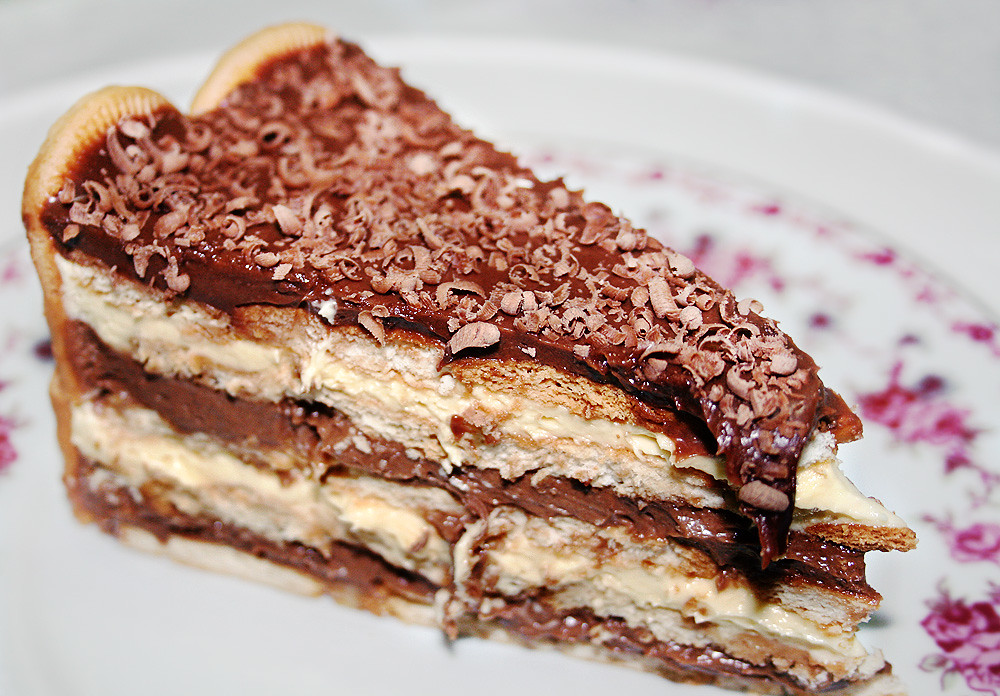
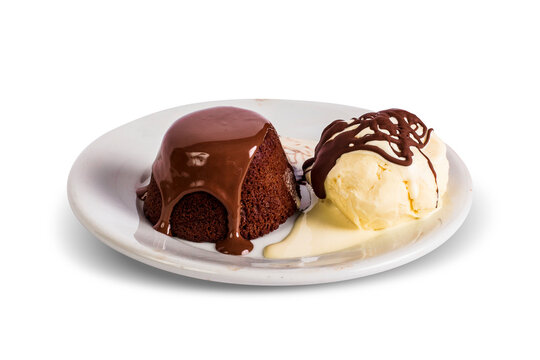
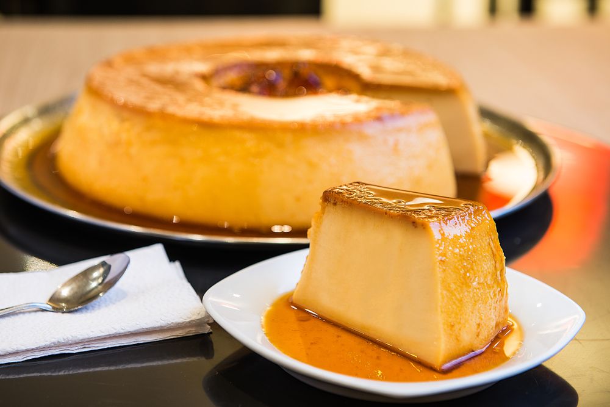
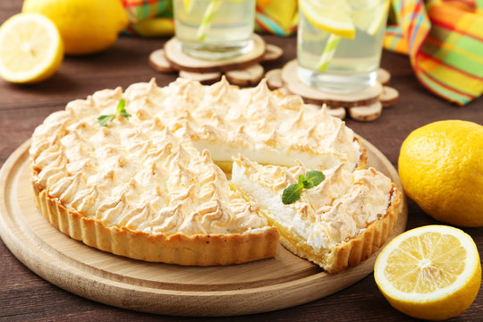

Mousse de maracujá .
Ingredientes (6 porções):
- 1 lata de leite condensado;
- 1 lata de suco de maracujá (medida pela lata de leite condensado);
- 1 lata de creme de leite.
Modo de preparo (5min):
- Em um liquidificador, bata o creme de leite, o leite condensado e o suco concentrado de maracujá;
- Em uma tigela, despeje a mistura e leve à geladeira por, no mínimo, 4 horas. Após a espera de 4 horas pode se servir.
Pavê de chocolate.

Ingredientes (8 porções):
- 1 lata de leite condensado;
- 2 lata de leite de vaca (use a medida da lata de leite condensado);
- 2 colheres (sobremesa) de amido de milho;
- 2 gemas;
- 4 colheres de chocolate em pó;
- 1 pacote de bolacha maizena;
Modo de preparo (1h):
- Para fazer o creme branco: Em uma panela coloque uma lata de condensado, uma lata de leite, uma colher de amido de milho e as 2 gemas. Leve ao fogo médio e misture até obter uma consistência grossa e cremosa;
- Para fazer o chocolate: Em uma panela coloque as quatro colher de chocolate em pó, uma lata de leite e uma colher de amido de milho. Leve ao fogo médio e misture até obter uma consistência cremosa;
- Em um refratário grande, despeje o creme branco, metade das bolachas, creme de chocolate;
- Repita o processo até preencher todo o refratário e leve à geladeira por 40 minutos.
Petit gateau.

Ingredientes (8 porções):
- 200 g de chocolate meio amargo ou ao leite;
- 2 colheres de manteiga sem sal;
- 1/4 xícara (chá) de açúcar;
- 2 colheres (sopa) rasas de farinha de trigo;
- 2 ovos inteiros (tire a pele da gema);
- 2 gemas.
Modo de preparo (30min):
- Derreta a manteiga e o chocolate em banho-maria;
- Bata os ovos e as gemas com açúcar na batedeira, até ficar bem claro;
- Junte o chocolate derretido e a farinha de trigo, misturando com uma espátula;
- Depois, unte as forminhas de empadinha, passe farinha de trigo e coloque a massa;
- Preaqueça o forno e leve para assar de 6 a 10 minutos (em fogo alto) até os bolinhos crescerem, mas o meio deve ficar molinho;
- Deve-se desenformar ainda quente;
- Sirva diretamente no prato, acompanhado com sorvete de creme.
Pudim de leite em pó.

Ingredientes (12 porções):
- 3 ovos inteiros;
- 12 colheres (sopa) de açúcar;
- 16 colheres (sopa) de leite em pó;
- 5 xícaras de água.
Modo de preparo (10min):
- Bata no liquidificador os três ovos, dez colheres de açúcar, as dezesseis colheres de leite em pó e quatro xícaras de água. Em seguida reserve;
- Para a calda: Misture em uma panela o duas colheres de açúcar e uma xícara de água e leve ao fogo;
- Não volte a mexer até que a calda chegue no ponto de caramelo, desligue o fogo.
- Em uma forma coloque a calda espere esfriar em seguida coloque a mistura que foi batida no liquidificador cubra com papel alumínio. Leve ao forno em uma temperatura de 180ºC, em banho-maria, por cerca de 1 hora e 30 minutos ou até espetar uma faca e ela sair limpa;
- Depois de frio, leve para gelar por cerca de 6 horas;
- Desenforme e sirva.
Torta de limão.

Ingredientes (15 porções):
- 200g de bolacha maizena;
- 150g de margarina;
- 1 lata de leite condensado;
- 1 caixa de creme de leite,
- suco de 4 limões;
- 3 ou 4 claras de ovo;
- 3 colheres (sopa) de açúcar;
Modo de preparo (25min):
- Triture a bolacha de maisena em um liquidificador ou processador;
- Junte a margarina e bata mais um pouco;
- Despeje a massa em uma forma de fundo removível (27 cm de diâmetro);
- Com as mãos, espalhe os biscoitos triturados no fundo e nas laterais da forma, cobrindo toda área de maneira uniforme;
- Leve ao forno médio (180° C), preaquecido, por aproximadamente 10 minutos;
- Bata todos os ingredientes no liquidificador até obter um creme liso e firme (exerto a massa que a massa que está na forma);
- Recheie a massa já assada com o creme que foi feito e leve à geladeira por 30 minutos.
- Bata as claras em neve e acrescente o açúcar;
- Misture até obter um ponto de suspiro e leve ao forno até dourar;
- Desenforme a torta (sem retirar o fundo falso), despeje a cobertura e se desejar coloque raspas de limão por cima. Pronto, agora pode se servir.